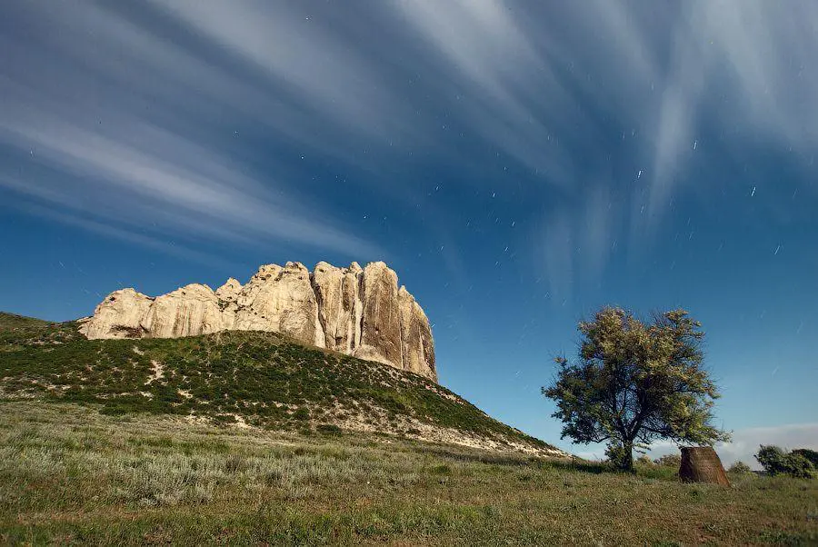
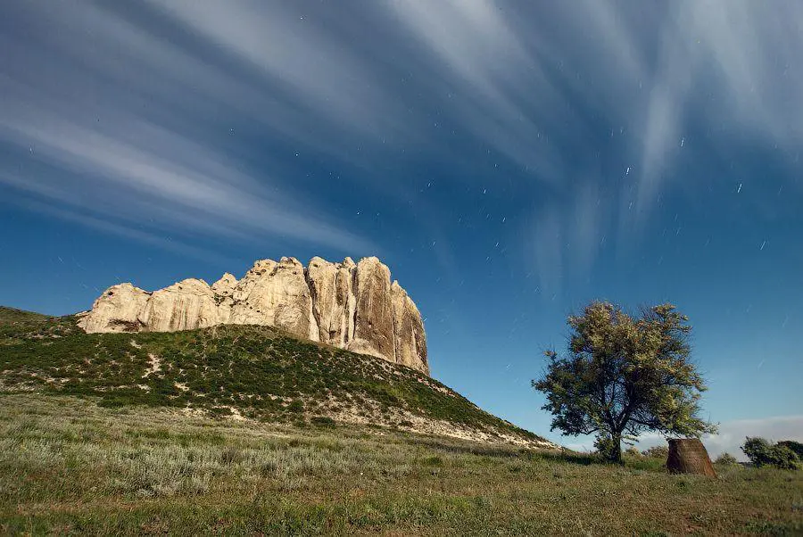

Білокузьминівські крейдяні скелі – дивовижний витвір природи. Вони знаходяться за 500 м від центру села Білокузьминівка Костянтинівського району Донецької області, за що і однойменно названі. У 1972 році скелі отримали статус геологічної пам’ятки природи місцевого значення та з того ж часу охороняються. Неймовірним видом Білокузьминівських крейдяних скель та їх околицями милуються місцеві жителі та приїжджі туристи. Заповідна зона займає 0,35 гектара землі.
Щодо історії виникнення скелеподібного оголення верхньої крейди вчені дотримуються єдиної теорії. Вік Білокузьминівських стовпів близько 90 млн. років, тож формуватися вони почали в останньому (крейдяному) періоді мезозойської ери. Тоді на території сучасної Донецької області було тепле море, у якому мешкали різні морські жителі. Ці організми, від мікроскопічних до великих (головоногих молюсків з панциром діаметром близько 5 м), мали вапняний скелет. Залишки цих тварин багато тисяч років збиралися на морському дні. З них і утворилися Білокузьминівські скелі, на уламках крейди яких іноді можна побачити відбитки панцирів давніх молюсків.
Найвища скеля – гора Меч. Її висота становить 25 метрів. У 16 ст. запорізькі козаки використовували скелю у якості спостережного пункту. У дозорних цілях її використовували і солдати під час Другої світової війни. Гряда невисоких крейдових пагорбів тягнеться на схід від гори Меч. У нижній її частині є гроти та печери. Відомо, що у 20-х рр. минулого століття у одній з таких печер жив православний відлюдник Степан Босий. Своє прізвисько він отримав через те, що ні в яку пору року не носив взуття. Він влаштував келію, а все, що потрібно було для життя, відлюдник вирубав з крейди. Так у нього була лежанка, ніша для ікон та невеличке віконце.
Скелі у Білокузьминівці мають велике археологічне значення. У 1960-ті роки у гірського підніжжя була виявлена стоянка давніх людей. Вони жили біля скелі, в них був кремінь, з якого виготовлялися знаряддя праці і зброю для полювання, і прісна вода з річки Біленька, що протікає неподалік.
На крейдяних скелях майже немає рослин, а ті, що є, – рідкісні, занесені до Червоної книги України. Їх унікальність в тому, що вони пристосувались до крейди, неродючої та сухої, і ніде більше рости не можуть. У степу, що оточує скелі, ростуть багатовікові клени, ясені, дуби та інші дерева. Неподалік від гір мешкають птахи-хижаки, лелеки, кажани, деякі гризуни. Можна зустріти ящірок та інколи черепах і зміїв. Значні ділянки степу неорані. Втім, завдяки цьому місцевість залишається такою мальовничою. Проїжджаючи поблизу с. Білокузьминівка чи, принаймні, Краматорська, відправтесь до Білокузьминівських крейдяних скель. Вам варто побачити їх красу на власні очі. Не пожалкуєте.

 
